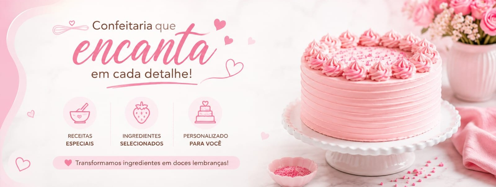
Catálogo
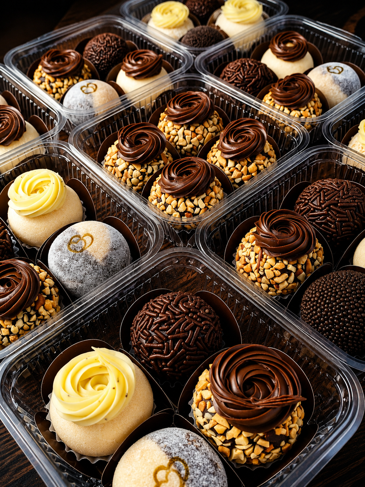
Doces
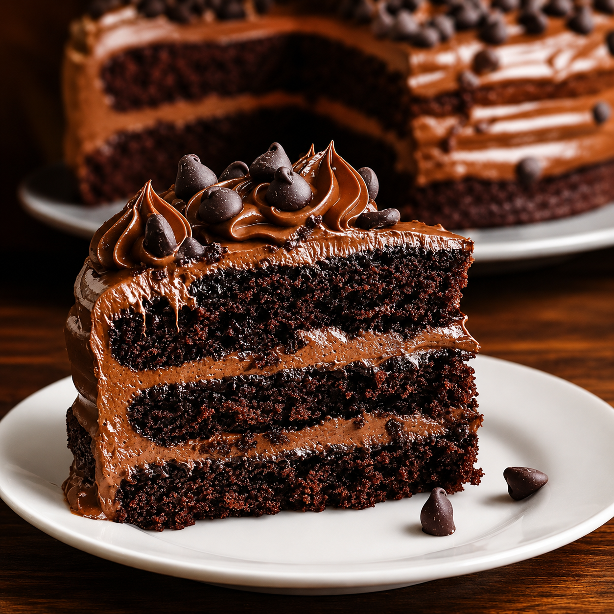
Bolos
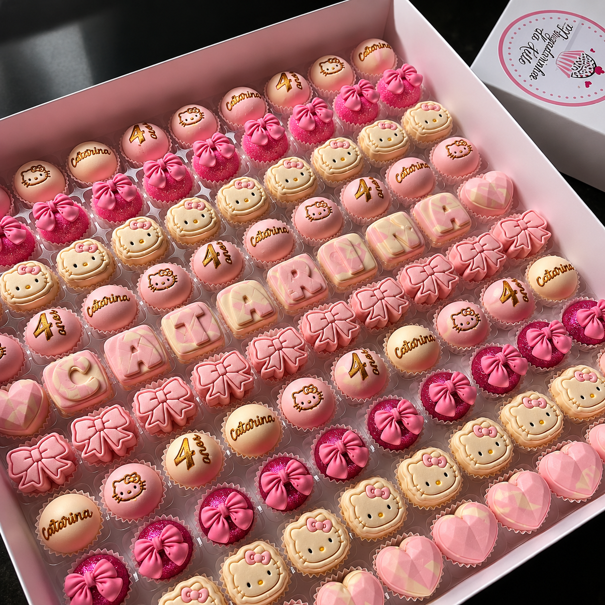
Doces Personalizados
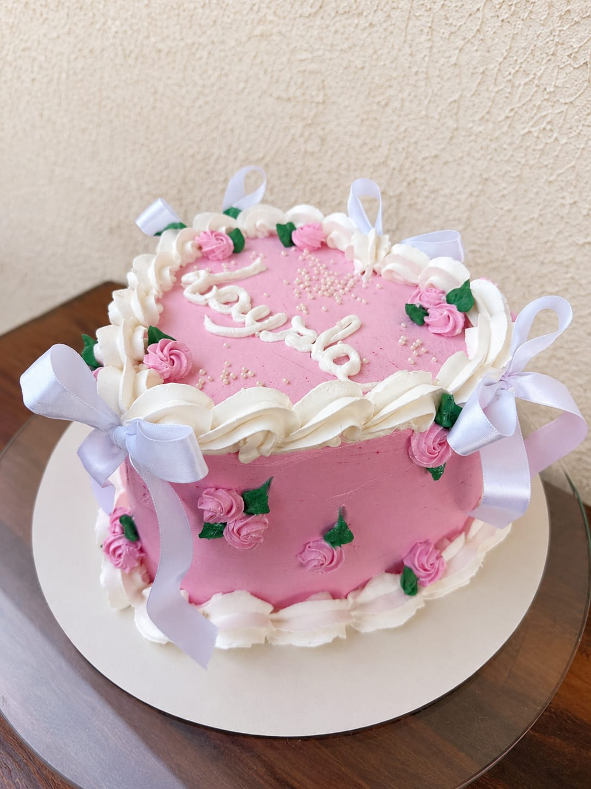
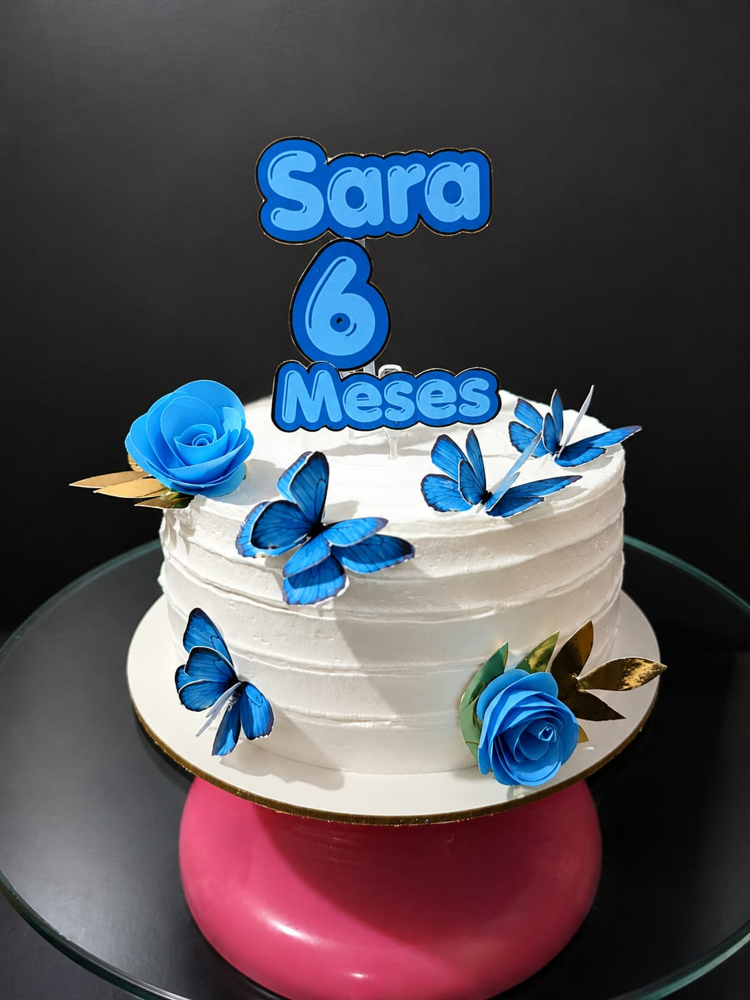
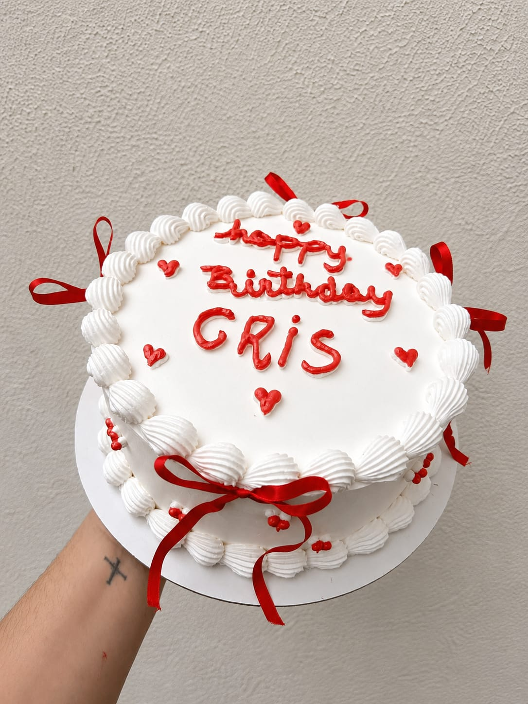
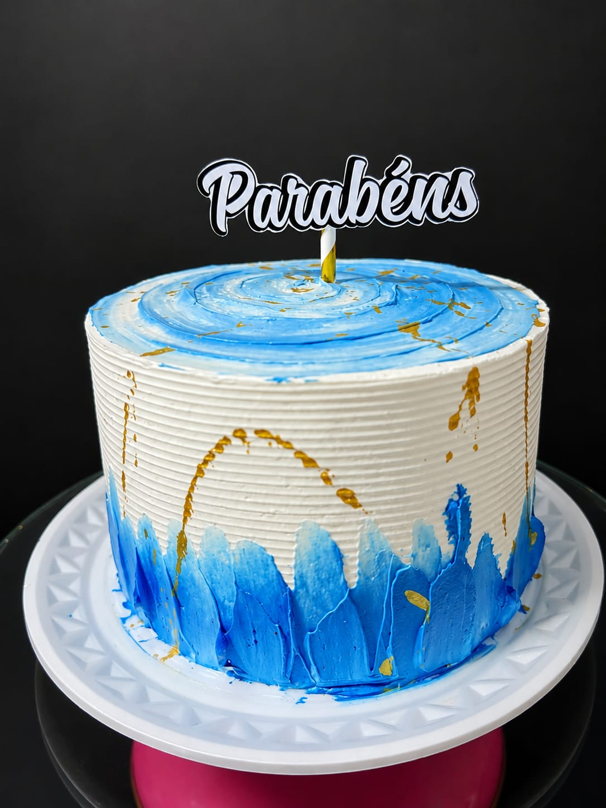
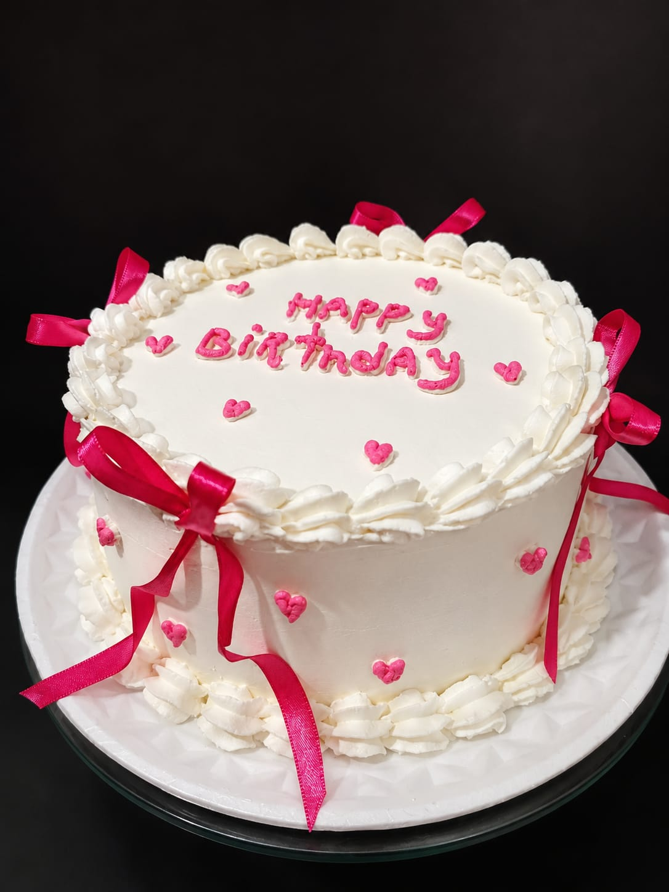
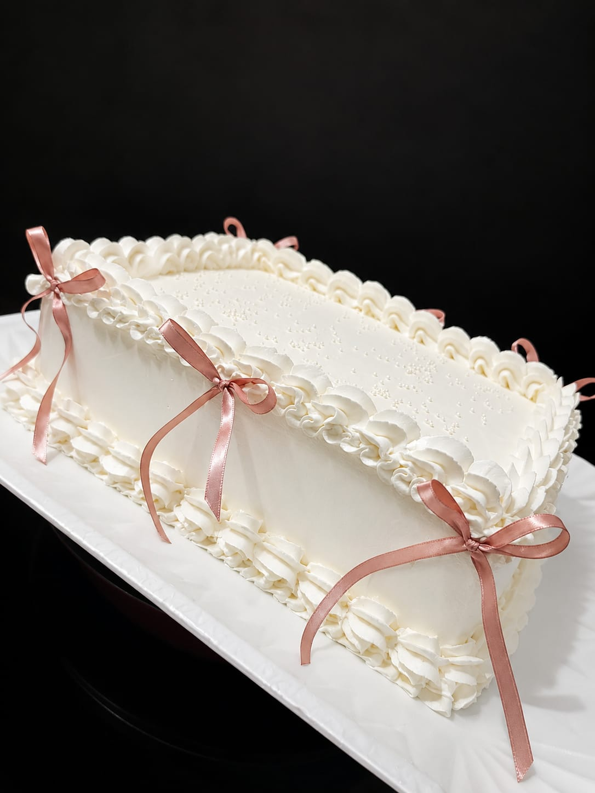
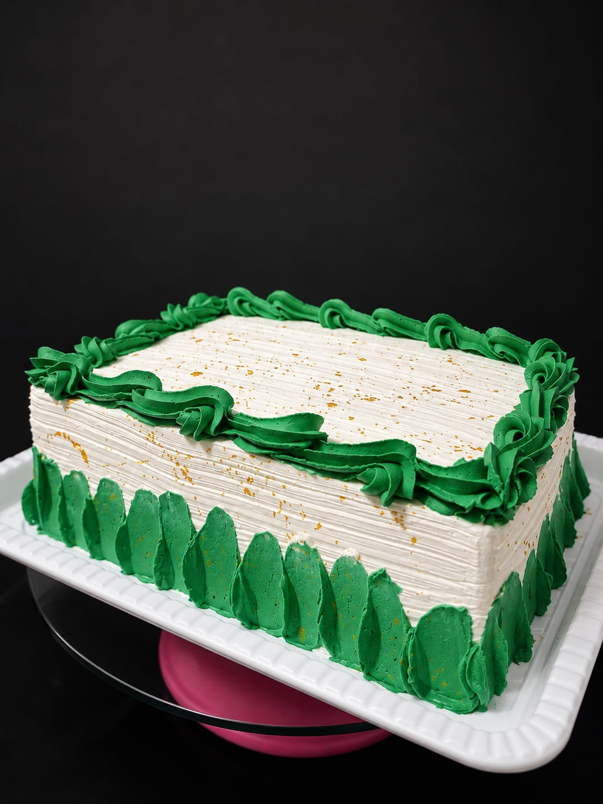
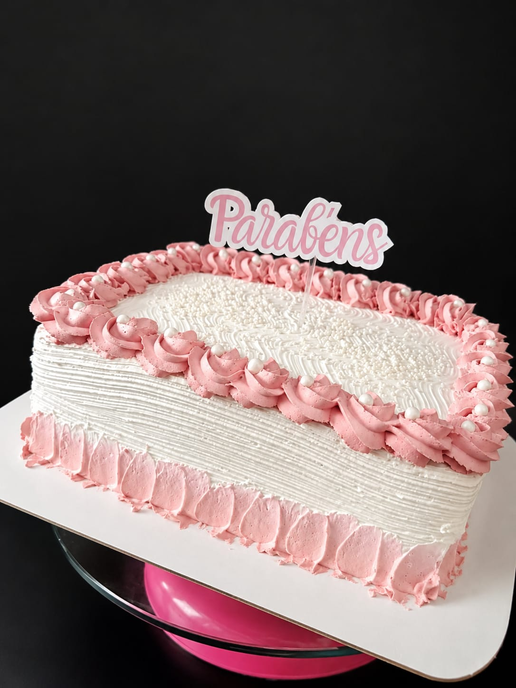
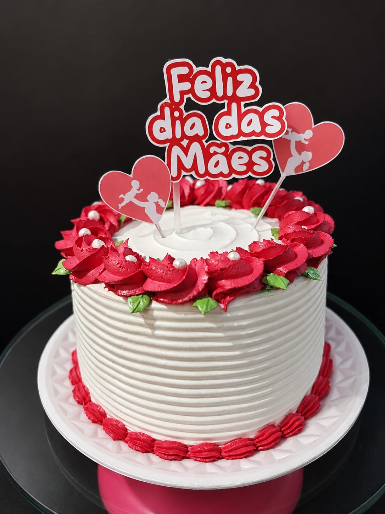
Como Tudo Começou
Amanda sempre gostou de cozinhar, mas foi aos 19 anos que começou a fazer bolos para complementar sua renda. No início, vendia apenas para familiares, amigos e colegas de trabalho. Com o aumento dos pedidos, passou a estudar novas técnicas, aperfeiçoar suas receitas e investir aos poucos em melhores equipamentos. Apesar dos desafios e erros pelo caminho, sua dedicação conquistou clientes fiéis. Após alguns anos trabalhando em casa, Amanda decidiu transformar seu sonho em realidade. Com planejamento e muito esforço, abriu sua própria confeitaria, levando para cada bolo a paixão e o carinho que marcaram o início de sua trajetória. 🍰✨

Endereço
Rua Monsenhor Guilherme, 648 - Jd Panorama, Foz do Iguaçu - PR
Pedidos
Pedidos devem ser feitos com
no mínimo de 3 dias de antecedência
Sinal: 50% do valor total na confirmação do pedido
Formas de Pagamento
Cartão de Crédito, Débito, Pix e Dinheiro